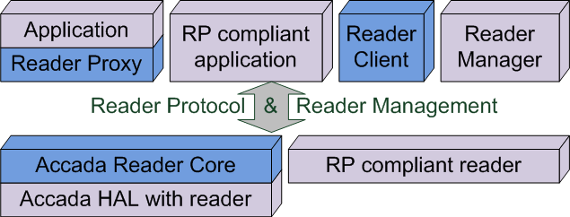

The goal of Fosstrak Reader is to provide an example implementation of the EPCglobal Reader Protocol that supports rapid prototyping. It is not a reference implementation. The reader further supports the EPCglobal Reader Management. Fosstrak Reader uses the Fosstrak HAL project as a backend. This means that the simulators and every reader with an implementation of the HardwareAbstraction interface can be controlled over the Reader Protocol.
Beside the reader-rprm-core module containing the reader implementation the Fosstrak Reader project consists of two further modules with interfaces to control a Reader Protocol compliant reader. The reader-rp-proxy module contains a library to control a reader from within a Java application over the Reader Protocol and an interface to receive notifications from the reader. The reader-rp-client module provides a graphical client to configure a reader over the Reader Protocol and two versions of an event sink that display information about events reported by the reader through a notification channel.
For a project overview and getting started for developers have a look at the Developer Guide.
The following figure gives an overview of the Reader architecture.
The Fosstrak Reader Core uses the Fosstrak HAL as a backend and can be controlled and used like any other Reader Protocol compliant reader. That means it can be controlled using the Reader Proxy, Reader Client or any other application that supports the Reader Protocol. Additionally the Reader Core implements the SNMP part of the EPCglobal Reader Management so it can be monitored and managed with any management software that supports SNMP.
The Reader Proxy can be used by any Java application as a library to be able to easily control a reader over the EPCglobal Reader Protocol. This module shares code located in the Reader Core module. The proxy does not support Reader Management over SNMP.
The Reader Client is a stand-alone application to control any Reader Protocol compliant reader. It provides a graphical user interface to generate and send commands to the reader and receive the responses. Reader Management over SNMP is not supported either.